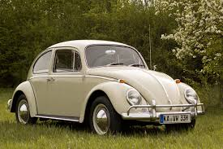

Volkswagen is a German automobile company that is well known for producing reliable and affordable cars for people around the world. The name “Volkswagen” means “people’s car” in German, and the company was originally founded in 1937 with the idea of creating a simple, practical vehicle that ordinary families could afford. One of its most famous creations is the Volkswagen Beetle, which became a global icon during the 20th century and remains one of the best-selling cars of all time. Over the years, Volkswagen expanded its lineup far beyond the Beetle and now produces a wide variety of models, from small city cars to larger family SUVs. Popular models include the Volkswagen Golf, Passat, Polo, and Tiguan, which are praised for their quality, safety, and efficiency. The company is also moving strongly into electric vehicles, with its ID. series, such as the ID.3 and ID.4, representing its commitment to the future of sustainable driving. Today, Volkswagen is one of the largest car manufacturers in the world and owns other famous brands like Audi, Porsche, and Lamborghini. It is admired for combining practicality with modern design, making cars that are suitable for everyday use while still offering comfort and style. With its long history, worldwide reputation, and focus on new technology, Volkswagen continues to be one of the most important names in the global automotive industry.
